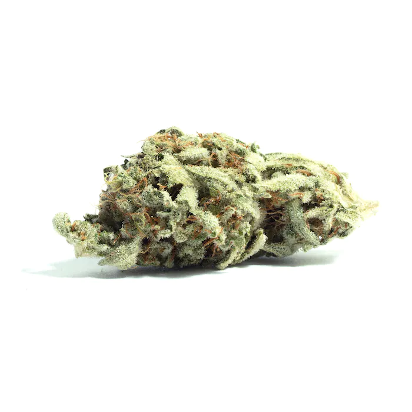

Wedding Cake, also known as "Triangle Mints #23," is a potent type of indica-hybrid marijuana
strain made by crossing Triangle Kush with Animal Mints. Fun fact: In Canada, this strain is known as Pink
Cookies. The Wedding Cake strain provides relaxing and euphoric effects that calm the body and mind. This strain
yields a rich and tangy flavor profile with undertones of earthy pepper. Medical marijuana patients choose
Wedding
Cake to help relieve symptoms associated with pain, insomnia and appetite loss. Consumers with a low THC
tolerance
should enjoy this strain with an extra slice of care due to its high THC content. Wedding Cake has soared in
popularity over the years and was named Leafly Strain of the Year in 2019.

Original Glue, also known as "Gorilla Glue," "Original Glue," "GG4," and "Gorilla Glue #4" is
a
potent hybrid marijuana strain that delivers heavy-handed euphoria and relaxation, leaving you feeling “glued”
to
the couch. Gorilla Glue's chunky, resin-covered buds fill the room with pungent earthy and sour aromas inherited
from its parent strains, Chem’s Sister, Sour Dubb, and Chocolate Diesel. Taking first place in both the Michigan
and Los Angeles 2014 Cannabis Cups as well as the High Times Jamaican World Cup, this multiple award-winning
strain's supremacy is no longer a secret, and consumers will search far and wide to get their hands sticky with
Original Glue (GG4).

Runtz, also known as "Runtz OG," is a rare type of hybrid marijuana strain. Runtz is made by
Cookies Fam by crossing Zkittlez with Gelato and it is loved for its incredibly fruity flavor profile that
smells
just like a bag of the sugary candy we all know and love. Because of the rising popularity of this cannabis
strain, it's no surprise Runtz was named Leafly Strain of the Year in 2021. Growers say this strain has
resin-drenched buds that range in color from rich purple to lime green. Runtz is celebrated for its creamy smoke
that is smooth and welcoming. This strain of weed produces euphoric highs and uplifting effects that are known
to
be long-lasting. Purple Caper Seeds released the same cross under the name Gelato Zkittlez.
Slurricane is an indica marijuana strain made by crossing Do-Si-Dos with Purple Punch.
Slurricane produces relaxing effects that come on slowly. This strain has a sweet flavor profile, with subtle
grape and sugary berries. Slurricane is the ideal strain for relaxing after a long day and will likely leave you
locked to your sofa. Medical marijuana patients choose this strain to help relieve symptoms associated with
insomnia.
Cherry Punch is a potent sativa-hybrid marijuana strain crossed between Cherry AK-47 and
Purple Punch F2. Bred by Symbiotic Genetics, Cherry Punch (also known as Black Cherry Punch) is widely
celebrated for its bold cherry flavor profile that comes from dense, citrus terpenes. Consumers who smoke this
strain say it smells fruity and rich and a little skunk-like. The high you get from smoking Cherry Punch is
uplifting and relaxing - perfect for jamming out to a new album or even taking care of a few errands. This
strain is ideal for those seeking relief from anxiety and stress. Cherry Punch buds come in a dark green color
with purple specks and striking orange hairs.
MAC, also known as "Miracle Alien Cookies" or simply "Miracle Cookies," is a hybrid marijuana
strain made by crossing Alien Cookies with Starfighter and Columbian. MAC produces creative effects that are
happy and uplifting. This strain features a smooth orange flavor that is balanced out by floral accents on a
sweet, earthy finish. Growers say MAC nugs are gorgeous and covered in resin. Medical marijuana patients choose
this strain to help relieve symptoms associated with stress and depression.
Oreoz, also known a "Oreo Cookies" and "Oreos," is a potent hybrid marijuana strain made by
crossing Cookies and Cream with Secret Weapon. This strain produces a long-lasting and relaxing high. Consumers
should take caution as the high potency of Oreoz may be overwhelming to those new to cannabis. This strain has
an aroma reminiscent of campfire s'mores, with extra delicious hints of chocolate and diesel. Medical marijuana
patients use Oreoz to help relieve symptoms associated with appetite loss, insomnia, chronic stress and
depression. Growers say this strain has dense buds that are lumpy, long, and neon green in color with amber
hairs and glittering trichomes.

Kush Mints, also known as "Kush Mintz," is a hybrid marijuana strain made by crossing Animal
Mints with Bubba Kush. The result is a high THC strain with a unique minty taste. Kush Mints provides effects
that are uplifting and happy. This strain has a complex flavor profile that tastes like mint and cookies.
Growers say Kush Mints grows best when indoors and done hydroponically. Medical marijuana patients choose this
strain to help stimulate appetite.
Gushers, also known as "White Gusherz" and "White Gushers," is a hybrid marijuana strain and a
member of the Cookies family with Gelato #41 and Triangle Kush parents. People who like it are also going to
like Runtz and Zkittlez. Gushers is a high-THC, low-CBD cultivar, and has strong, euphoric effects that can
initially feel enervating, then sedating. Named for its explosively thick fruit flavor, it's available as flower
or extract. Growers of all skill levels and grow it indoors, outdoors, and in greenhouses. Gushers came from a
group of growers affiliated with the Cookie Fam on the West Coast in the '10s, but it can be found worldwide.